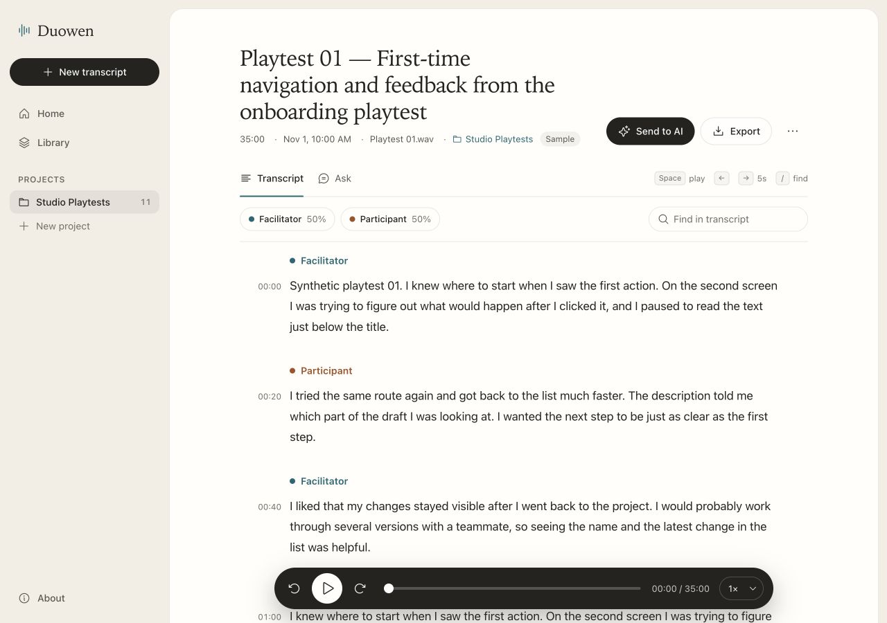
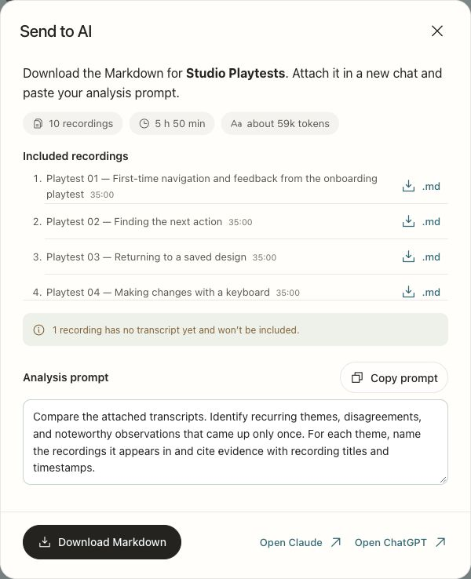

Discover
Look at my own workflow
I used my earlier projects as the starting point. The task I wanted to improve was revisiting what someone actually said when I needed to make a decision later.
Duowen 多问 · CMU AI Augmented Design
I built a transcript workspace for design critiques and playtests. It lets me find a moment, check it against the audio, and bring several sessions into one analysis.

Design process
In Flighty and Mibly, I practiced tracing design decisions back to their evidence. I wanted that same trail for spoken feedback, where the wording and who said it can change what I take away.
Discover
I used my earlier projects as the starting point. The task I wanted to improve was revisiting what someone actually said when I needed to make a decision later.
Define
My target was a 30–40 minute critique or playtest. I needed readable text, speaker labels I could correct, and a direct way back to the audio.
Develop
I explored a recording library, a focused workspace, and a notebook for batches. I kept the library for organization and moved reading, listening, and editing into the transcript itself.
Deliver
Deepgram transcribes uploaded audio. Duowen connects the returned text, speaker labels, and timestamps to a browser editor and player. Projects give related recordings a place to stay together.
The workflow
I attach the file in Claude or ChatGPT and ask for themes with recording titles and timestamps, so I know where to check a claim.

What worked in testing
I checked real transcription, speaker separation, and click-to-play on the live prototype. I also checked the new recording action, project Markdown download, and prompt copying on the production site.
The ten-recording export check used synthetic transcripts. I still want to run full-length sessions through upload and cross-session analysis, and test the flow on a physical phone.
For the course videos
Each deck opens with a timer. Press N for the talk track and suggested timing for each slide.